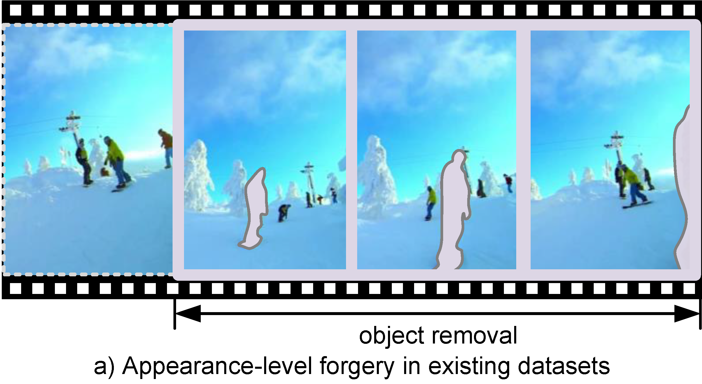
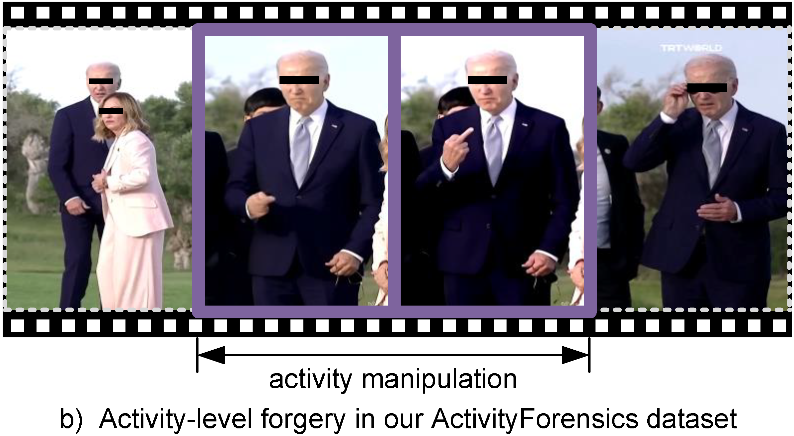
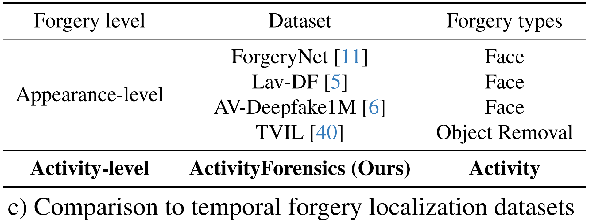
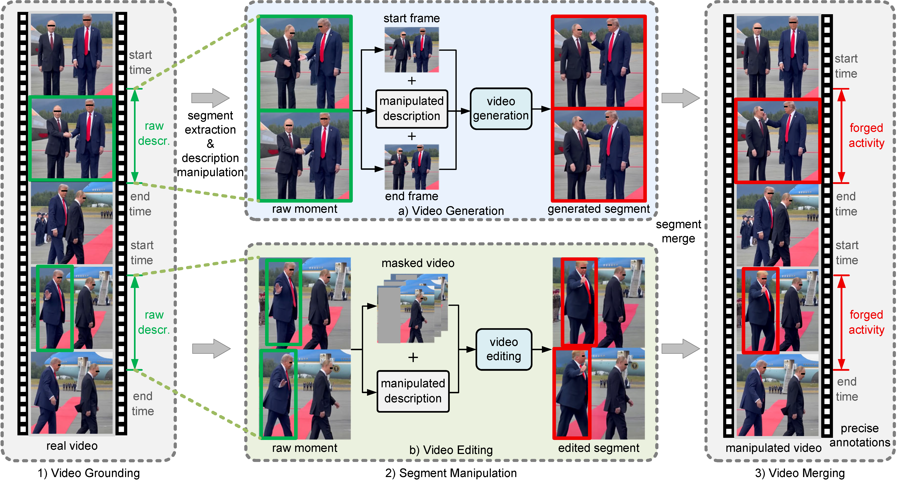

ActivityForensics: A Comprehensive Benchmark
for Localizing Manipulated Activity in Videos
The IEEE/CVF Conference on Computer Vision and Pattern Recognition 2026 (CVPR 2026)
(Dataset password: ActivityForensics)
Beyond Face: The First Benchmark for Action-Level Deepfake Localization



Grounding-Assisted Dataset Construction

Overview of grounding-assisted dataset generation pipeline.
@inproceedings{bao2026activityforensics,
title={ActivityForensics: A Comprehensive Benchmark for Localizing Manipulated Activity in Videos},
author={Bao, Peijun and Luo, Anwei and Pan, Gang and Kot, Alex C. and Jiang, Xudong},
booktitle={Proceedings of the IEEE/CVF Conference on Computer Vision and Pattern Recognition (CVPR)},
year={2026}
}